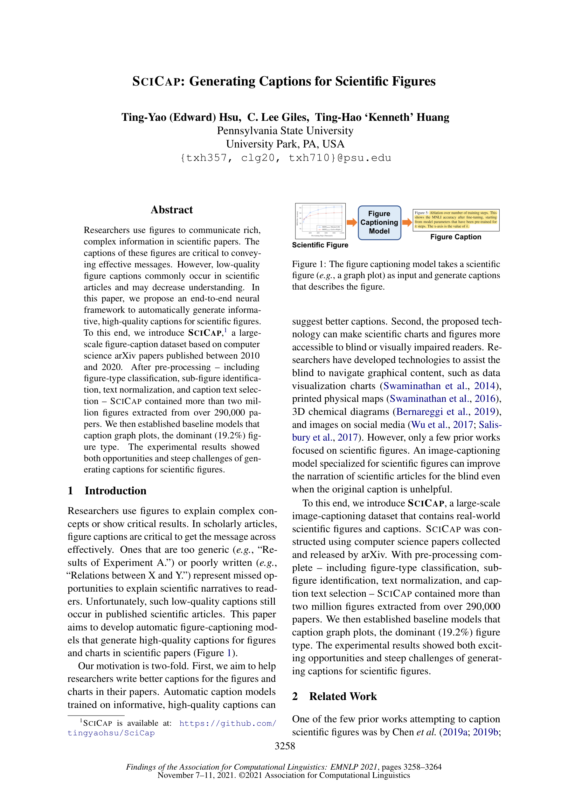
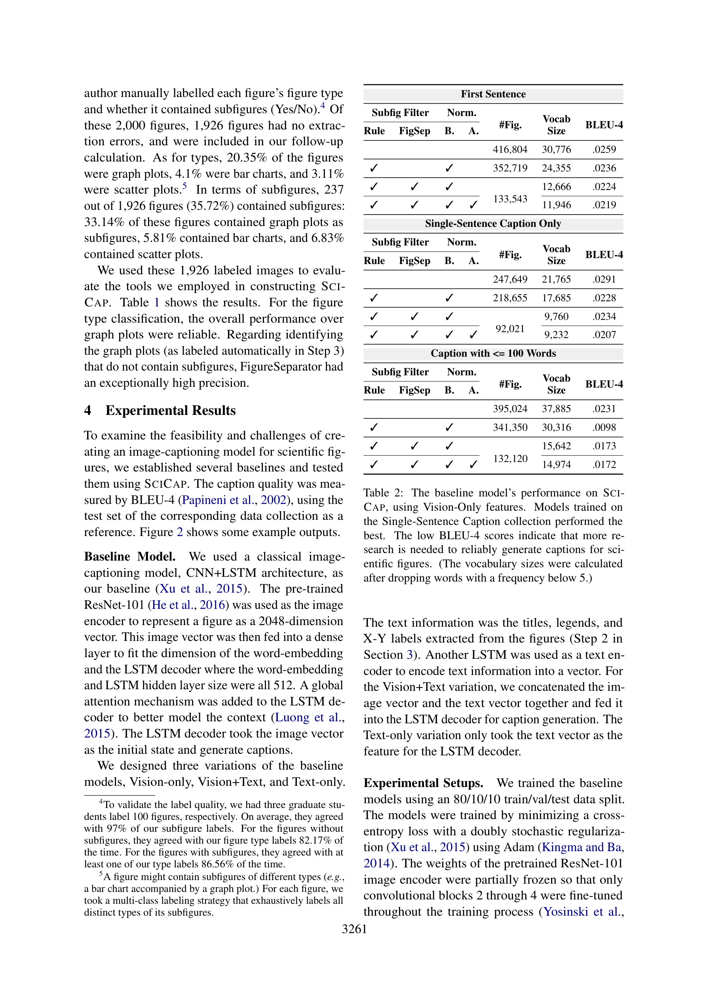

저자: Ting-Yao Hsu, C. Lee Giles, Ting-Hao Huang | 날짜: 2021 | Conference: Findings of EMNLP 2021 | DOI: 10.18653/v1/2021.findings-emnlp.277

Figure 1
SciCap은 과학 논문의 figure에 대한 자동 캡션 생성을 위해 구축된 최초의 대규모 실세계 figure-caption 데이터셋이다. arXiv 컴퓨터과학 논문 290,000편 이상에서 200만 개 이상의 figure를 추출하고, figure type 분류, subfigure 제거, 텍스트 정규화 등 체계적 전처리 파이프라인을 통해 graph plot 중심의 133,543개 고품질 figure-caption 쌍을 제공하며, CNN+LSTM 기반 baseline 모델로 과학 figure captioning의 가능성과 도전과제를 실증적으로 제시했다.

Figure 2
총평: SciCap은 과학 figure captioning이라는 중요한 문제를 정의하고, 최초의 대규모 실세계 데이터셋을 구축한 데 의의가 있다. 데이터 수집 및 전처리 파이프라인이 체계적이고 재현 가능하며, 합성 데이터와 실세계 데이터 간의 근본적 차이를 명확히 드러냈다. 다만, baseline 모델의 성능이 매우 낮고 모델링 측면의 기여가 제한적이어서, 데이터셋 논문으로서의 가치가 모델링 논문으로서의 가치보다 훨씬 크다. 이후 multimodal LLM 시대에 이 데이터셋이 벤치마크로 활용될 잠재력은 높다.